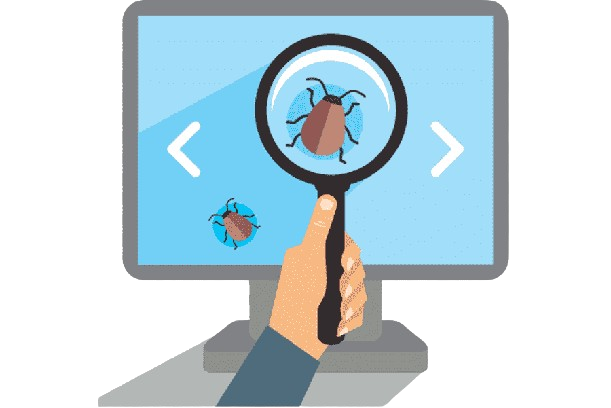

Testing manual
- Exploratorio
- Casuística de funcionalidades
- Reporte de los bugs encontrados
¡Hola! Soy Mandy, una apasionada del mundo del testing de software con varios años de experiencia en la industria. Desde que descubrí mi fascinación por la calidad del software, he dedicado mi carrera a ayudar a equipos de desarrollo a alcanzar sus metas a través de pruebas rigurosas y eficientes. Con una sólida formación técnica y una amplia experiencia en diferentes metodologías de testing, me enorgullece ofrecer servicios de testing de alta calidad que no solo identifican y resuelven problemas, sino que también mejoran la experiencia del usuario y la fiabilidad de las aplicaciones.
Si estás buscando servicios de testing de software personalizados y de alta calidad, ¡has venido al lugar correcto! Como profesional independiente, estoy comprometida a proporcionarte resultados excepcionales que te ayuden a alcanzar tus objetivos de calidad y rendimiento.
Testing manual
Testing automatizado
Testing de performance
Alan B.
"¡Increíble experiencia con el servicio! La profesionalidad y el soporte excepcional que ofrece Mandy son insuperables. Su plataforma simplifica el proceso de testing, permitiéndome identificar y solucionar rápidamente cualquier problema en mis proyectos. ¡Altamente recomendada para cualquier equipo de desarrollo que busque calidad y eficiencia en sus procesos de testing!"
Mónica A.
"¡Impresionada con el laburo de testing de Mandy! Su servicio es rápido, intuitivo y tremendamente útil. ¡Gracias a ella, mis proyectos están más sólidos que nunca!"